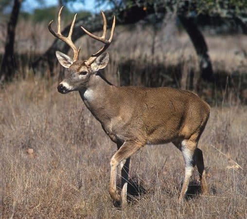

El venado, también conocido como ciervo en algunas regiones, es un mamífero herbívoro que pertenece a la familia cervidae. Existen diferentes especies de venados y una de las más conocidas el vendado blanco
Estos animales habitan en amplia variedad de ecosistemas, como bosques templados, praderas, selvas tropicales y zonas montañosas y la mayoria se encuentra distribuida en América,Europa,Asia y el norte de Africa
DATO CURIOSO:
los venados son animales facinantes que escondenn muchas curiosidades.Por ejemplo, Los machos pueden crecer sorprendentemente rápido, hasta 2.5cm por día y durante ese crecimiento están cubiertas por una piel llamada terciopelo, que es rica en vasos sanguíneas.